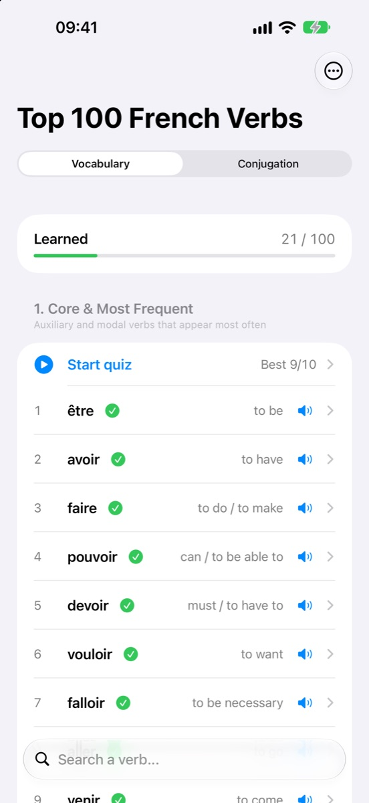
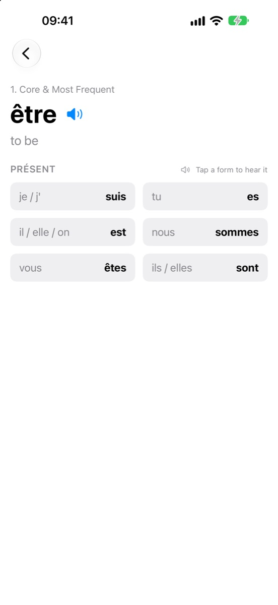
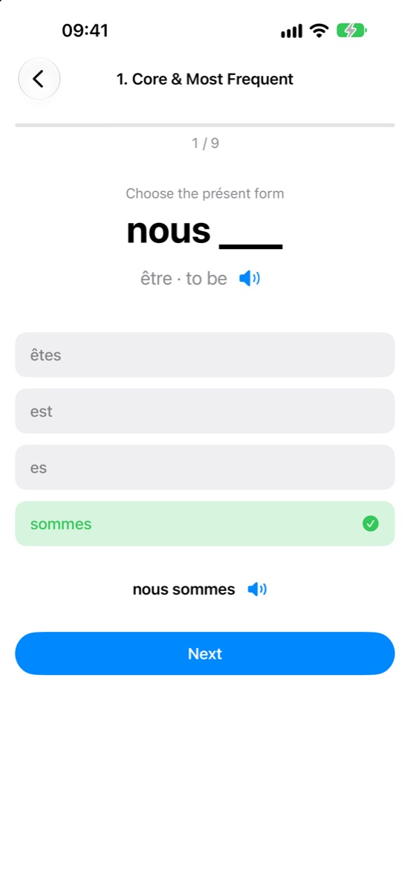

Learn what they mean, how they conjugate and how they sound — grouped by theme, with quick quizzes that make them stick.

Why it works
Être, avoir, faire, aller, pouvoir… Master the top 100 and you can understand and build most of the sentences you need.
10 themes of 10 verbs — speech, movement, emotions and more. Related words are easier to remember together.
All six forms for every verb, including the irregular ones like aller, faire and pouvoir.
Tap a verb or any form to hear it with its pronoun — “nous avons”, “j’ai”. Uses the built-in French voice, offline.
Vocabulary: pick the right translation. Conjugation: fill in “nous ___” with the right form.
Learned verbs get a check mark, tricky ones are flagged for review, and every group keeps your best score.
Find any verb by its French or English meaning in a second.
Learn
Open any verb to see its six présent forms. Tap one to hear it — try it here:
être — to be

Practice
Each quiz covers one theme. The wrong options are chosen to make you think, not guess.

What's inside
Start with the core and work your way out — or jump to whatever you need today.
No account, no tracking, no internet connection needed. Your progress stays on your iPhone.
Support
Found a mistake in a translation or conjugation, or have an idea? Open an issue on GitHub — every report is read.
No, everything works offline.
Yes, on your device: learned verbs and best scores are kept between launches. To start over, open the menu (⋯) and tap “Reset progress”.
The app uses the best French voice installed on your iPhone. For a more natural one, go to Settings → Accessibility → Spoken Content → Voices → French (France) and download a voice marked Enhanced or Premium.
Version 1.0 focuses on the présent — the tense you need first and use most.